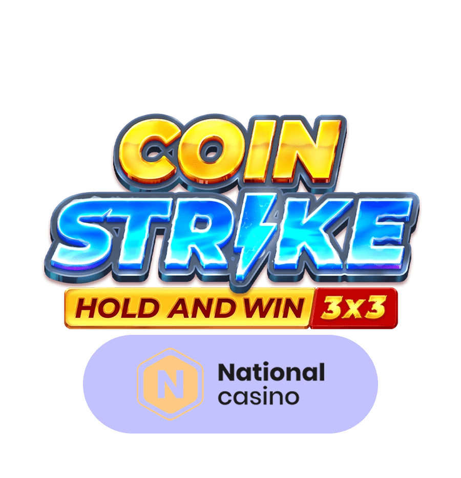
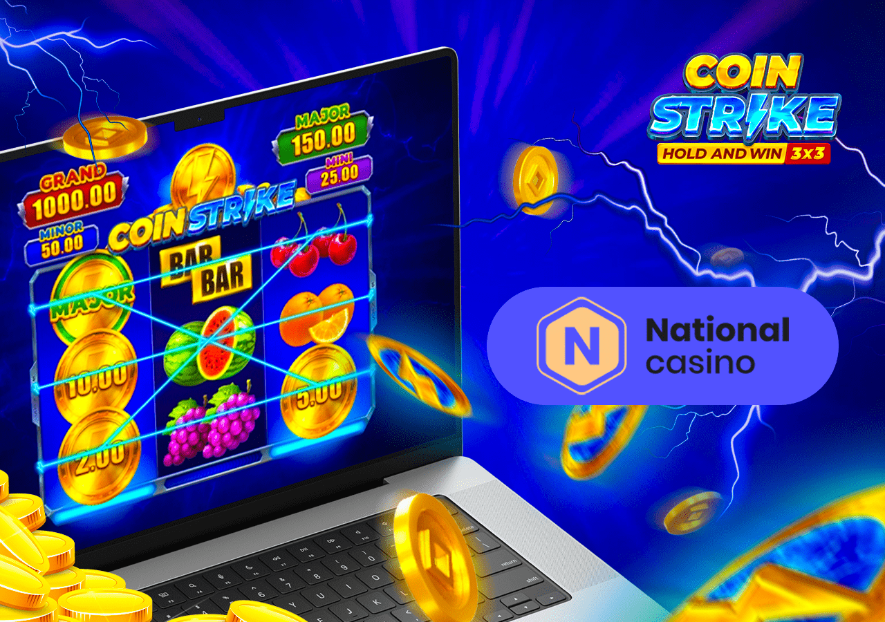
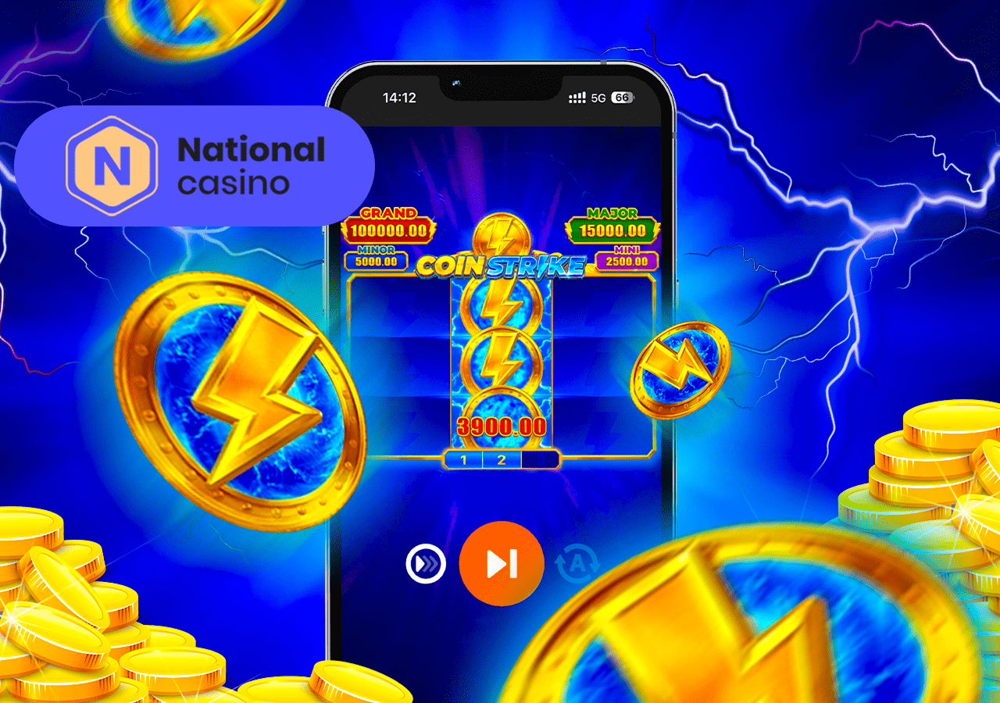
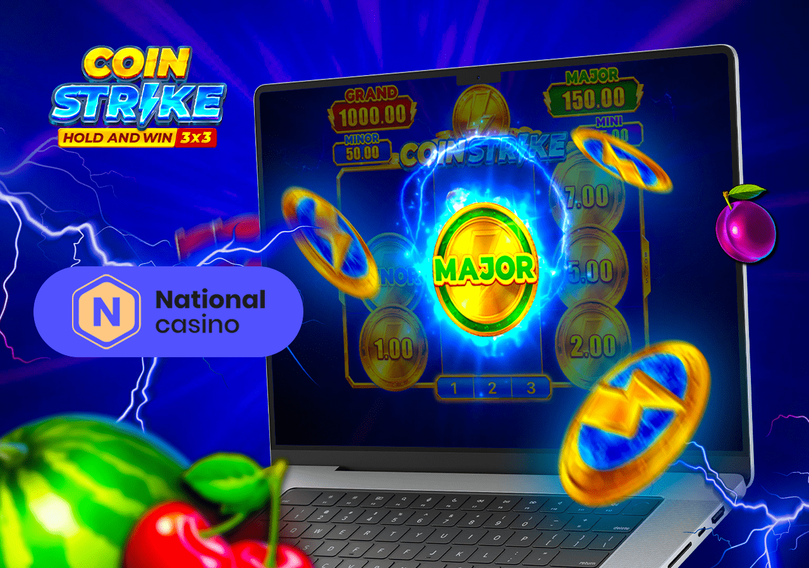
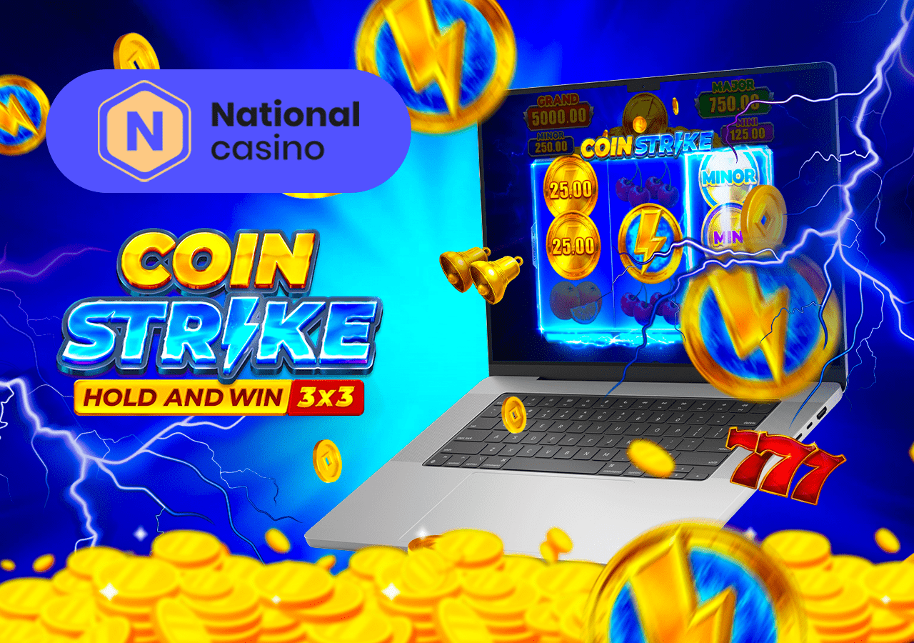

Choosing where to play is just as important as choosing what to play. When it comes to the Coin Strike: Hold and Win slot, NationalCasino stands out as a top-tier platform for several compelling reasons. As a leading Coin Strike casino, NationalCasino has built a reputation for providing a secure, rewarding, and user-friendly environment. It's a fully licensed and regulated entity, ensuring that every spin is fair and every transaction is protected.
CoiCoin Strike: Hold and Win at NationalCasino
Are you ready to explore an electrifying slot adventure without risking a cent? The coin strike demo offers Australian players the chance to experience the thrilling Coin Strike: Hold and Win slot by Playson for free at top online casinos like RocketPlay, WinSpirit, King Billy, and National Casino. Dive into the coin strike: hold and win demo today and discover why this slot is a favorite among Australian slot enthusiasts!

Why NationalCasino is the Premier Destination for Coin Strike

Furthermore, NationalCasino enhances the Coin Strike: Hold and Win NationalCasino experience with a generous welcome bonus, ongoing promotions, and a prestigious VIP program that rewards loyal players. With its vast game library, robust security measures, and exceptional customer support, NationalCasino doesn't just offer the game—it elevates the entire experience, making it the ultimate destination for both new and veteran slot enthusiasts.
What is the Coin Strike: Hold and Win Game?
At its core, Coin Strike: Hold and Win is a masterfully designed video slot that pays homage to the classic 3x3 reel fruit machines of old while injecting them with powerful, modern features. The game operates on a simple 3-reel, 3-row grid with 5 fixed paylines, creating an intuitive and easy-to-understand layout that appeals to all players.
The theme is a vibrant celebration of Las Vegas nostalgia. The screen is filled with iconic, high-definition symbols like cherries, lemons, plums, golden bells, BARs, and the coveted lucky sevens. However, what truly sets this game apart are its two groundbreaking bonus mechanics: the titular Hold and Win Bonus Game and the innovative Coin Strike feature. These features are the gateways to the game's biggest rewards, including four distinct in-game jackpots. The fusion of its classic feel with the immense potential of its bonus rounds is what makes the Coin Strike game NationalCasino experience so uniquely compelling.
Screenshots of the Coin Strike Game at NationalCasino
(This section is designed for a gallery of high-resolution screenshots. The images would showcase: 1. The main game interface within the NationalCasino platform, displaying the 3x3 reel layout. 2. A close-up of the Hold and Win bonus feature being triggered with six coin symbols. 3. The bonus round in full swing, with multiple coin and jackpot symbols locked in place. 4. A celebratory "Grand Jackpot" win screen, highlighting the game's massive payout potential.)
The Core Mechanics: A Spin-by-Spin Breakdown
Understanding the mechanics of the Coin Strike: Hold and Win slot is refreshingly straightforward, which is a major part of its appeal. Here’s a detailed breakdown of the gameplay flow:
- Setting Your Wager: Before you spin, you must select your bet amount. The game offers a flexible betting range, accommodating both casual players with smaller bankrolls and high rollers seeking bigger stakes. You can easily adjust your bet using the "+" and "-" buttons on the interface.
- Spinning the Reels: Once your bet is set, you hit the spin button. The three reels spin and then stop, revealing a new set of symbols on the 3x3 grid.
- Base Game Wins: Wins are awarded for landing three matching symbols along one of the 5 active paylines. The paytable, accessible within the game's info menu, details the payout for each symbol. The red lucky sevens are the highest-paying standard symbol.
- Special Symbols: The key to unlocking the game's massive potential lies in its special symbols. The Wild symbol substitutes for other symbols to help form wins. However, the most important are the Bonus (golden coins) and Coin Strike symbols, which are your ticket to the main features.
The base game offers a steady stream of smaller wins, but the primary goal for every player is to trigger the incredibly lucrative bonus features that define the Coin Strike: Hold and Win NationalCasino experience.
Game Integrity and Fairness: The Role of RNG
You can play the Coin Strike: Hold and Win slot at NationalCasino with complete peace of mind, as its integrity is guaranteed by a sophisticated Random Number Generator (RNG). This technology ensures that every single spin is an independent event, with outcomes that are completely random and unpredictable. Playson, the game's developer, is a licensed and reputable provider, and their games are regularly audited by third-party agencies to certify the fairness and randomness of the RNG. When you play at a trusted Coin Strike casino NationalCasino, you are assured of a fair and unbiased gaming environment.
Essential Terms for Mastering Coin Strike
To fully understand the game, it helps to be familiar with a few key terms:
- Payline: A fixed line across the reels where winning combinations must land.
- Wild Symbol: A special symbol that substitutes for others to help create wins.
- Bonus Symbol: The golden coin symbols that trigger the Hold and Win feature.
- Coin Strike Symbol: A unique symbol on the middle reel that collects the values of all other symbols in the bonus round.
- Hold and Win: The name of the main respin bonus feature where you collect cash and jackpot symbols.
- RTP (Return to Player): The theoretical percentage of wagered money a slot pays back over time. The Coin Strike Hold and Win rtp is 95.66%.
- Volatility: A measure of the game's risk. Medium-High volatility means a balance of smaller wins and the potential for huge, less frequent payouts.
Jackpot Symbols (Mini, Minor, Major, Grand): Special symbols that award fixed jackpot prizes during the Hold and Win feature.
A Deep Dive into NationalCasino: The Ultimate Coin Strike Casino
To truly understand why NationalCasino is the ideal platform, let's explore its key features that directly enhance your Coin Strike: Hold and Win NationalCasino sessions.

Unpacking the NationalCasino Welcome Bonus
NationalCasino rolls out the red carpet for its new players with a generous two-part welcome package. Your first deposit is typically met with a 100% match bonus up to a significant amount, plus a bundle of free spins for a selected slot. Your second deposit also receives a bonus, giving you even more ammunition to use on games. This bonus cash can be used to extend your playtime on the Coin Strike: Hold and Win slot, giving you more spins and more chances to trigger the lucrative Hold and Win feature without dipping further into your own funds.
Ongoing Promotions and VIP Program
The value at NationalCasino doesn't stop after the welcome bonus. The platform is known for its regular promotions, including:
- Monday Free Spins: Start your week with a fresh batch of free spins on a featured slot.
- Friday Reload Bonus: Boost your weekend bankroll with a reload bonus on your Friday deposit.
- Slot Tournaments ("Races"): Compete against other players by spinning the reels on qualifying slots, including popular Playson titles, to climb a leaderboard and win cash prizes.
Furthermore, every real money spin on the Coin Strike game NationalCasino contributes to your progress in the elite VIP program. As you wager, you earn points that elevate you through multiple VIP levels, unlocking exclusive rewards like bigger cashback offers, personalized bonuses, and other premium perks.
Security, Licensing, and Fair Play
NationalCasino operates under a valid international license, making it a legitimate and trustworthy platform. They employ state-of-the-art SSL encryption technology to protect all player data and financial transactions. This commitment to security means you can deposit funds and play Coin Strike Hold and Win real money with complete confidence, knowing your information is safe.
How to Start Playing Coin Strike: Hold and Win at NationalCasino
Getting started is a quick and easy process. Follow these simple steps to go from a new visitor to spinning the reels in minutes:

- Register Your Account: Visit the NationalCasino website and click the "Register Now" button. The sign-up process is streamlined into three short steps where you'll provide your login details, account information, and confirmation.
- Claim Your Bonus and Deposit: Once registered, navigate to the deposit section. Choose from a wide variety of secure payment methods. On your first deposit, be sure to opt-in to claim the welcome bonus to double your initial bankroll.
- Find the Game: Use the intuitive search bar in the game lobby and type "Coin Strike". The game's icon will appear instantly.
Launch and Play: Click the icon to launch the game. Set your desired bet amount, and you're ready to hit the spin button and start your adventure!
Play the Coin Strike: Hold and Win Demo at NationalCasino for Free
Before you commit real money, NationalCasino allows you to play the Coin Strike: Hold and Win slot in a fully-featured demo mode. This is an invaluable tool for several reasons:
- Learn Without Risk: You can familiarize yourself with all the game's rules, paylines, and bonus features without spending a cent.
- Experience the Volatility: Get a real feel for the game's rhythm. See how frequently wins occur and how often the bonus round might trigger.
- Test Strategies: Experiment with different betting strategies to see what works for you before playing the Coin Strike Hold and Win real money version.
The demo mode is identical to the real game in every way, using virtual credits instead of cash. It’s the perfect way to build confidence and prepare for real money action.
The NationalCasino Advantage: What Makes the Coin Strike Experience Unique?
While the Coin Strike game is the same everywhere, the platform you play on makes a huge difference. The Coin Strike casino NationalCasino advantage lies in its holistic approach. The combination of a highly responsive and well-designed user interface, 24/7 professional customer support, a rewarding VIP program, and constant promotions creates an environment where your gameplay is valued and enhanced. The regular slot tournaments provide an extra layer of competition and winning potential that you won't find at every casino.

Effective Strategies for Playing Coin Strike: Hold and Win
While slots are games of chance, you can use certain strategies to manage your bankroll and maximize your enjoyment.
The Bankroll Management Strategy
This is the most crucial strategy. Before you play, set a strict budget and stick to it. Size your bets as a small fraction (e.g., 1/100th) of your total session budget. This allows you to endure losing streaks and gives you more spins, increasing your chances of triggering the Hold and Win feature. Set a clear win goal and a loss limit, and walk away when you hit either.
The "Chase the Bonus" Strategy
The biggest payouts in the Coin Strike: Hold and Win slot come from the bonus round. This strategy focuses on triggering it. By playing with a smaller bet size, you get more spins for your budget, which mathematically increases your opportunities to land the 6+ bonus symbols required. Patience is key here; the goal is to sustain your bankroll long enough to hit the high-potential bonus round.
The Profit-Taking Strategy
This strategy is about discipline. Don't just aim for the Grand Jackpot. The Hold and Win feature can deliver very solid payouts (50x-200x your stake) without a jackpot. If you hit a significant win that you're happy with, consider it a successful session. It’s wise to lock in profits by cashing out rather than risking it all for an even bigger win.
Coin Strike Predictors and "Hack" Tools: The Honest Truth
A quick search online might reveal tools or apps claiming to be "Coin Strike predictors" or "hacks." These programs often claim they can predict when the bonus will hit or guarantee wins. These claims are 100% false and fraudulent.
The Coin Strike: Hold and Win slot operates on a certified RNG, making its outcomes impossible to predict. These "hack" tools are scams designed to steal your money or infect your device with malware. The only way to win is through luck and smart play on a legitimate platform like NationalCasino. Do not download or pay for any such tools.
The NationalCasino Mobile App Experience
NationalCasino offers a flawless mobile gaming experience through its fully optimized website, which functions like a web app. There's no need to download anything from an app store.
Playing Coin Strike on Android and iOS Devices
Simply open your mobile browser (Chrome, Safari, etc.) on any smartphone or tablet, navigate to the NationalCasino website, and log in. The site will automatically adapt to your screen size. The Coin Strike game NationalCasino mobile version is identical to the desktop one, with touch-friendly controls and no loss of features or performance. You can deposit, play, and withdraw winnings seamlessly while on the go.
|
Game Specification |
Details for Coin Strike: Hold and Win |
|
Game Title |
Coin Strike: Hold and Win |
|
Provider |
Playson |
|
Reels/Rows |
3x3 |
|
Paylines |
5 (Fixed) |
|
RTP (Return to Player) |
95.66% |
|
Volatility / Variance |
Medium-High |
|
Maximum Win |
5,150x the total stake |
|
Bonus Features |
Hold and Win Bonus, Coin Strike Feature, 4 In-Game Jackpots |
|
Jackpot Values |
Mini (25x), Minor (50x), Major (150x), Grand (1,000x) |
|
Platform Availability |
Desktop, iOS, Android (via browser) |
Legality of Playing at NationalCasino
NationalCasino operates under a license from the Curaçao Gaming Authority, one of the most common regulators for international online casinos. This allows it to legally offer its services to players in many countries around the world. As an offshore licensed casino, it provides a legal and secure platform for players where local regulations permit. It is always the player's responsibility to be aware of the online gambling laws in their specific jurisdiction.
Player Reviews for the Coin Strike Game at NationalCasino
- Thomas, Brisbane: “The Coin Strike KingBilly at King Billy gave me a 600x win with Hold and Win—unreal! The mobile version is a game-changer.”
- Isabella, Adelaide: “The Coin Strike: Hold and Win KingBilly mobile app is smooth, and the bonuses are fantastic—highly recommend King Billy!”
- Henry, Perth: “I’ve enjoyed steady wins with the Coin Strike game KingBilly—King Billy’s loyalty program keeps me coming back!”
- Charlotte, Sydney: “The Coin Strike Hold and Win KingBilly jackpots are thrilling, and the customer support at King Billy is top-notch!”
Responsible Gaming at NationalCasino
NationalCasino is committed to responsible gaming. Gambling should always be a form of entertainment, not a source of income. The platform provides several tools to help you stay in control:
- Deposit and Loss Limits: Set daily, weekly, or monthly limits on how much you can deposit or lose.
- Wager Limits: Control how much you can wager over a specific period.
- Cool-Off Period: Take a short break from gaming if you feel you need it.
- Self-Exclusion: If you need a longer break, you can self-exclude from the casino entirely.
If you ever feel that gambling is becoming a problem, NationalCasino provides links to professional help organizations like GamCare and Gamblers Anonymous.
Conclusion: Why Coin Strike at NationalCasino is a Winning Combination
In the world of online slots, Coin Strike: Hold and Win stands out for its brilliant fusion of classic simplicity and modern jackpot excitement. When you pair this exceptional game with a top-tier platform, the experience is elevated to a whole new level. The Coin Strike: Hold and Win NationalCasino combination offers players a secure, rewarding, and highly entertaining environment.
With a generous welcome bonus, a valuable VIP program, regular promotions, and a commitment to fair play, NationalCasino is more than just a place to play—it's the ultimate Coin Strike casino. If you're ready to chase the 5,150x Coin Strike Hold and Win max win, there is no better place to start your adventure.
FAQ
Yes, absolutely. The Coin Strike game is developed by the licensed provider Playson and uses a certified RNG for fairness. NationalCasino is a legally licensed and regulated online casino that employs robust security measures, making it a safe and legitimate platform to play for real money.
The maximum potential win in the Coin Strike: Hold and Win slot is 5,150 times your total stake. This is typically achieved by winning the Grand Jackpot during the Hold and Win bonus feature.
Yes. NationalCasino offers a full-featured demo version of the Coin Strike game. This allows you to play with virtual credits to learn the rules and features completely free of charge before deciding to play for real money.
The official Return to Player (RTP) for the Coin Strike: Hold and Win slot is 95.66%. This is a theoretical percentage indicating the long-term payout of the game.